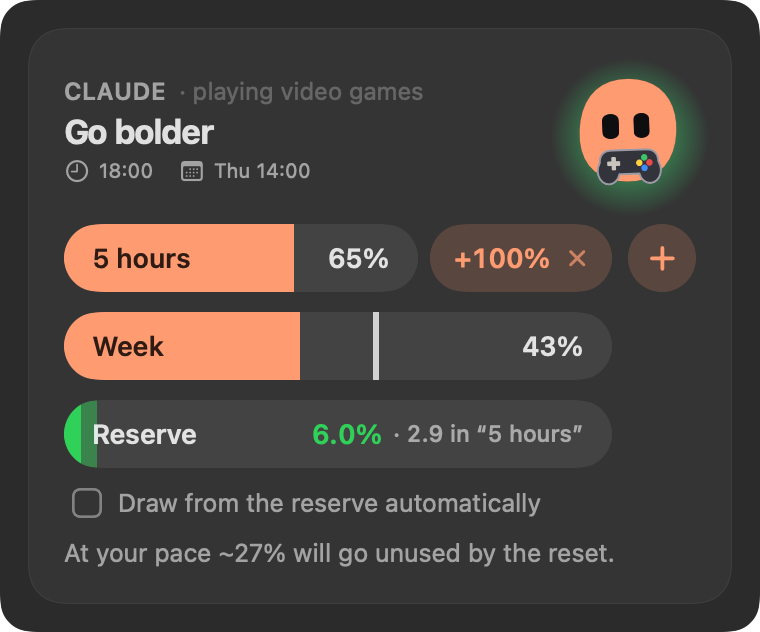
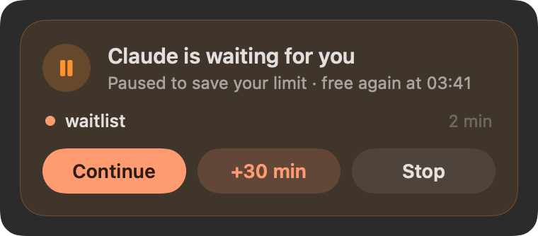
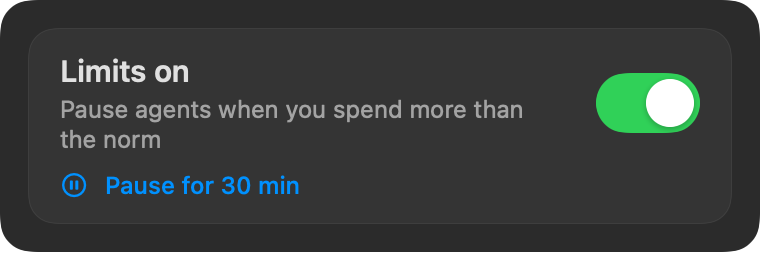

Slowburn lives in your menu bar and paces your Claude Code and Codex limits so they last all week. One glance tells you how much runway you have — and when an agent is about to burn tomorrow's budget, you get to decide.
Open source · macOS 14+ · one-line install · no account, no telemetry
Your runway
Three bars instead of a wall of percentages. Slowburn turns the provider's numbers into a plan for the week and keeps you on it.

Soft brake
With the optional hooks, Claude Code and Codex pause when the next step would eat into tomorrow. They wait in the menu bar for one click: keep going, pause the limits for 30 minutes, or stop — and they wrap up cleanly.

Deadline day
Need half an hour to finish? Pause the limits: agents run without stops, warnings stay, and the limits come back on their own. Deadline day? Turn them off and every hook steps aside — Slowburn keeps counting quietly, so you'll know exactly what the sprint cost.

Companions
Orange is Claude, violet is Codex. While an agent works, its blob sits at the laptop doing exactly what the agent does — read live from the session log. Between tasks it fishes, naps or roasts marshmallows. Forty pastimes in all.
Install
It puts the latest Slowburn — signed and notarized by Apple — into your menu bar and starts it at login. After that it updates itself.
curl -fsSL https://kdanet.github.io/slowburn/install.sh | shNeeds macOS 14+. Unzip and move Slowburn to Applications. · Read the script · Source on GitHub · Uninstall: -s -- --uninstall after sh
FAQ
Only when you're about to spend tomorrow's limit today — and even then it asks. Most of the time it just shows your runway. Need a minute? Pause the limits for half an hour. Deadline day? Flip the big switch and everything is let through.
No. Slowburn asks the same usage endpoints the official CLIs use, with the access Claude Code and Codex already have on your Mac — read-only. It never stores or refreshes a token itself and needs no token of its own. Session logs are read locally. The only other request is a daily look at this site for updates. No analytics, no AI calls.
The hooks let everything through. Nothing can be held without the app there to release it.
Claude Pro and Max used through Claude Code or the Claude app, and ChatGPT plans used through Codex. Codex credits are tracked too, so you see when work starts costing money.
No — Slowburn is an independent, MIT-licensed open-source project. Not affiliated with Anthropic or OpenAI.